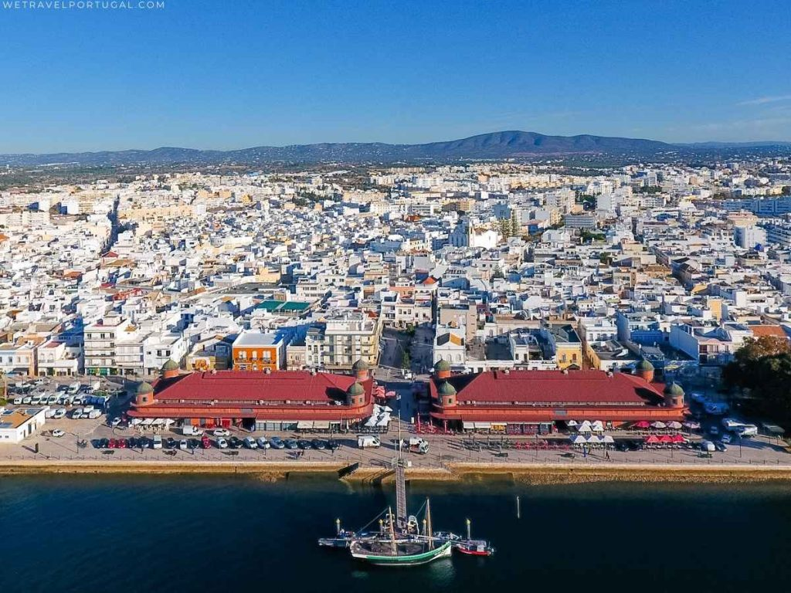

Olhão da Restauração
Uma cidade marcada pelo mar, pela pesca, pela coragem popular e por uma identidade única no Algarve.

Da vila piscatória à cidade
Olhão teve, desde tempos pré-históricos, indícios de povoamento que atestam a ocupação deste território. A mais antiga referência escrita a este lugar designa-o, em 1378, como lugar a que chamam Olham.
A barra à mão e a existência de água abundante teriam sido fatores decisivos para que alguns pescadores, no início do século XVII, se começassem a fixar na praia de Olhão.
O povoado desenvolve-se contrariando a vontade das autoridades de Faro, a cujo termo pertencia. Para esse crescimento beneficia, a partir de meados do século XVII, da proteção da Fortaleza de S. Lourenço que, embora precária, vigiava a entrada da barra e dissuadia os ataques dos corsários.
O incremento da pesca costeira e do alto mar, assim como das trocas comerciais, provoca um grande surto populacional e, em 1695, os moradores deste lugar requerem ao Bispo a desanexação da freguesia de Quelfes.
Foi então criada a Freguesia de Nossa Senhora do Rosário de Olhão.
Aquando da ocupação francesa do Algarve, em 1808, surge em Olhão, a 16 de junho, um espontâneo e genuíno levantamento popular contra os abusos dos invasores.
Esta revolta culmina com a expulsão dos franceses do lugar de Olhão e, por impulso, de todo o Algarve. No mês seguinte, embarcam para o Brasil 17 homens de Olhão no Caíque “Bom Sucesso”, com a missão de levar à Corte da Colónia a novidade da expulsão.
A recompensa traduziu-se num Alvará com força de Lei, com que o Príncipe-Regente resolve distinguir Olhão e os seus habitantes, passando de lugar a Vila e ordenando que “se denomine Vila de Olhão da Restauração”.
A passagem a Vila implicava a criação de um novo Concelho, dotado de autonomia local, o que só aconteceria em 1826. Nesse ano, é erigida a Câmara de Olhão.
Em 1835, a freguesia de Moncarapacho passou a fazer parte do Termo de Olhão e, no ano seguinte, a Câmara tomou posse das freguesias de Olhão, Quelfes, Pechão e parte da freguesia de Moncarapacho.
Em 1874 tem lugar uma divisão judicial de Portugal que determina a constituição definitiva do Concelho de Olhão, com as atuais cinco freguesias: Olhão, Moncarapacho, Quelfes, Pechão e Fuseta.
Com o decorrer do tempo, a pequena vila de pescadores converteu-se num grande centro económico, social e urbano de tal modo florescente que, em 1985, é elevada à categoria de Cidade.